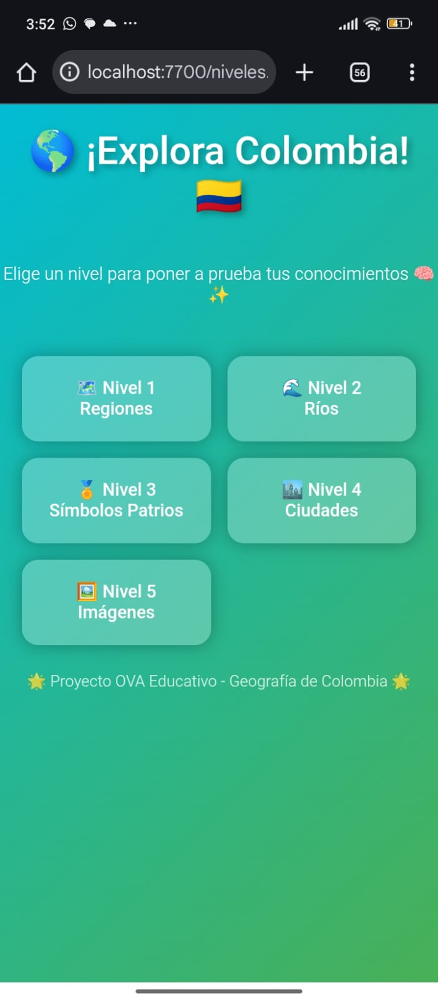
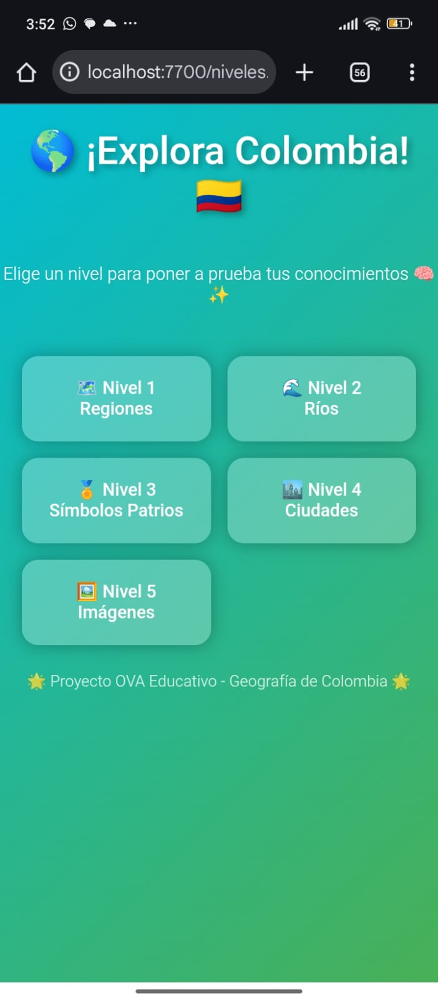
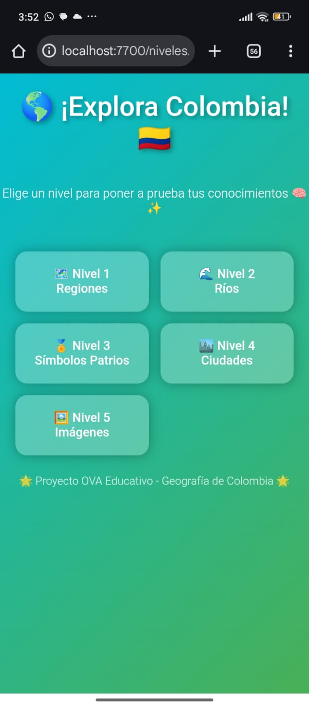

Proyecto Educativo – Área de Sociales
Este Objeto Virtual de Aprendizaje (OVA) está diseñado para estudiantes de 5to grado con el fin de fortalecer los conocimientos sobre la geografía de Colombia de una manera sencilla, visual y dinámica. A través del contenido presentado, los niños podrán explorar regiones, mapas y conceptos básicos que hacen parte del territorio colombiano.
Este OVA se creó como herramienta educativa para apoyar el aprendizaje de los estudiantes mediante recursos digitales, fomentando habilidades de comprensión, observación y análisis del entorno geográfico de Colombia. Su diseño responde a la necesidad de reforzar la enseñanza de las ciencias sociales utilizando medios tecnológicos accesibles y llamativos.
El contenido del OVA está dividido en diferentes apartados que explican las regiones de Colombia, características culturales, límites, clima, biodiversidad y otros aspectos importantes de la geografía nacional.
Este OVA permite a los estudiantes navegar por distintas secciones donde pueden encontrar información, actividades y niveles de aprendizaje relacionados con la geografía de Colombia.
El diseño del OVA está pensado para ser visualmente atractivo, utilizando colores llamativos, botones interactivos y elementos gráficos que facilitan la comprensión del contenido para niños de primaria.

Reemplaza estas imágenes con tus capturas reales.
Puedes acceder al OVA completo aquí:
Este OVA representa una herramienta didáctica útil para que los estudiantes fortalezcan sus conocimientos sobre la geografía de Colombia de una forma divertida, dinámica y accesible.